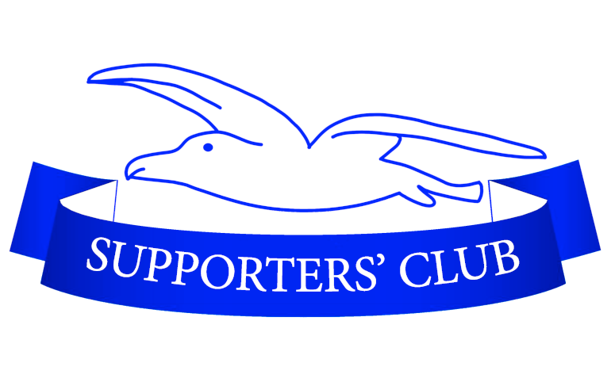
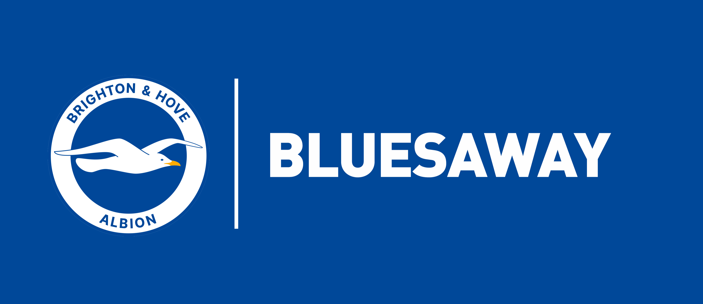
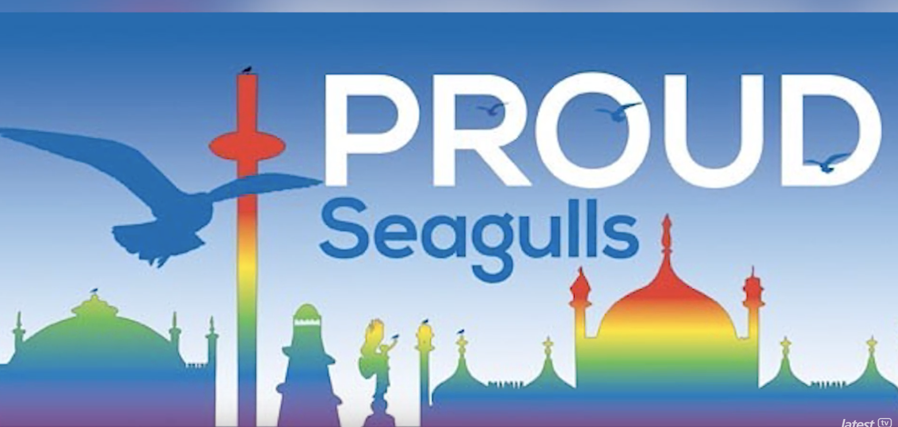

Site oficial | Menu | Torcida | Elenco | Camisa | Cidade
As torcidadas do Brighton
Principais torcidas:
- Brighton & Hove Albion Supporters Club (BHASC): É a organização oficial e democrática de torcedores, fundada para criar eventos, arrecadar fundos de caridade e gerenciar viagens em ônibus independentes para os jogos fora de casa.
- Bluesaway: Um popular clube oficial de torcedores focado especificamente em organizar caravanas e caravanas familiares para acompanhar a grande maioria das partidas do Brighton fora de casa.
- Proud Seagulls: O principal grupo oficial e comunidade de torcedores LGBT do clube, focado em promover um ambiente seguro, inclusivo e combater a discriminação no futebol .



- West Street Firm: Historicamente conhecido na Inglaterra como o grupo de hooligans associado ao Brighton nas décadas passadas
- Seagulls Worldwide: Também existem dezenas de ramificações internacionais (incluindo grupos nos EUA, Ásia e Europa) reconhecidas pelo clube.